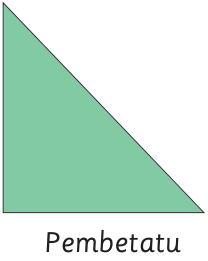
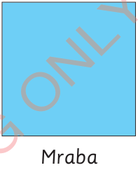
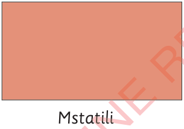
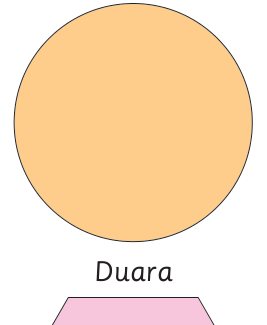
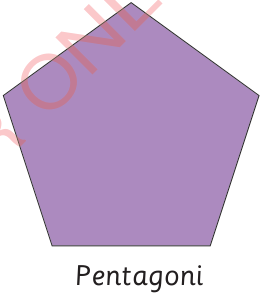
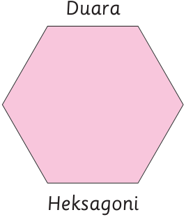

Majina ya maumbo bapa
Maumbo bapa hupewa majina kutokana na muundo, pembe au pande zake. Michoro ifuatayo inaonesha baadhi ya maumbo bapa na majina yake:

Pembetatu

Mraba

Mstatili

Duara

Pentagoni

Heksagoni
Mraba na mstatili ni maumbo bapa ambayo kila moja lina pande nne. Utofauti wa maumbo haya ni kuwa pande zote za mraba zina urefu unaolingana. Katika mstatili, pande zinazotazamana zina urefu unaolingana.